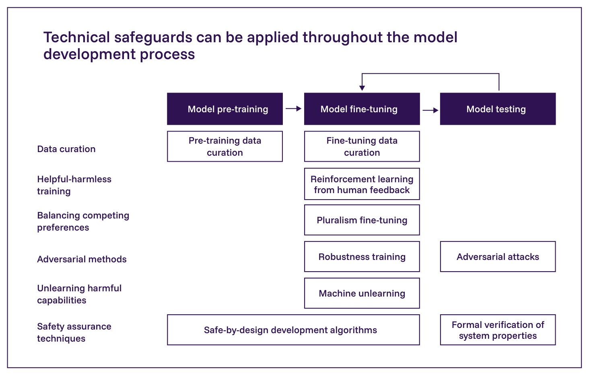
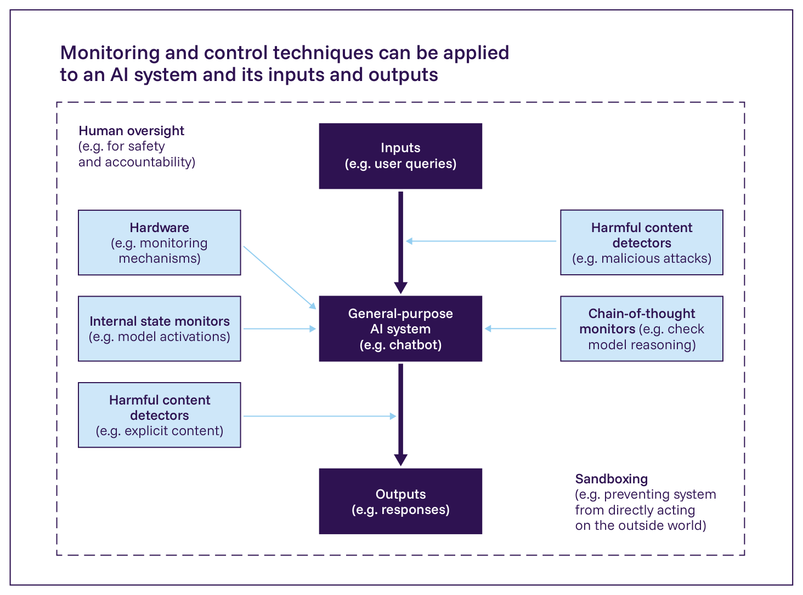
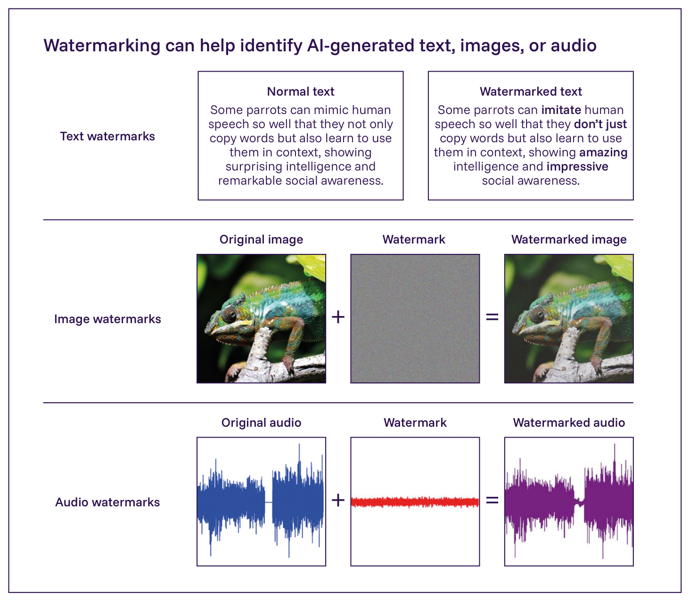
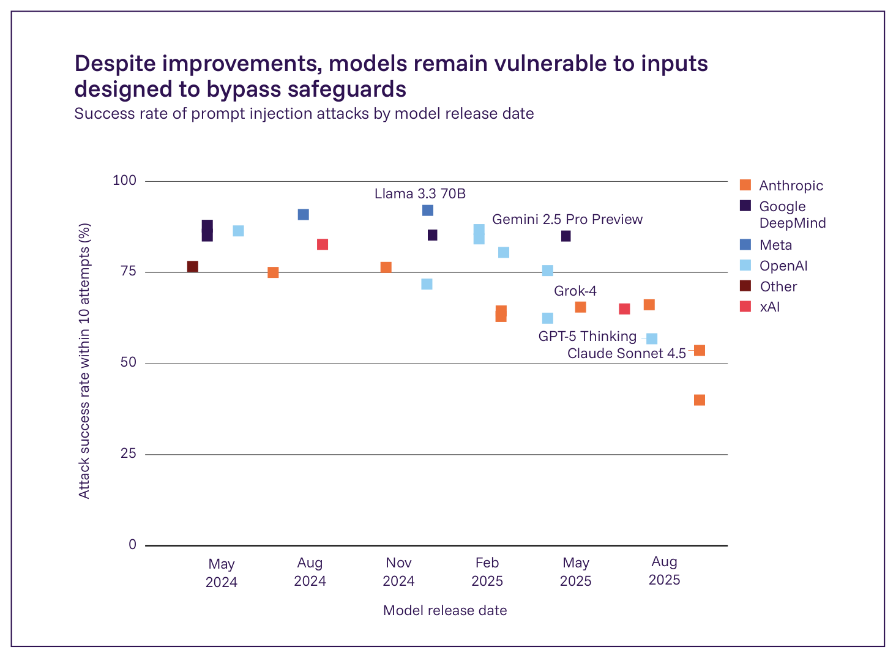

日本語訳
| 技術的安全対策 | 説明 |
|---|---|
| より安全なモデルの開発 | |
| データキュレーション（Data curation）(1167) | モデルが危険な能力を学習しないよう、有害なデータを除去する。これらの手法は、有害な能力を持たず有害なファインチューニングに抵抗するオープンウェイトモデルの開発を含め、有用でありうる（55）。しかし、キュレーションの誤りやスケーリングに課題がある（1168）。 |
| 人間のフィードバックからの強化学習（RLHF）(64*) | 有用かつ無害であるといった、指定された目標にモデルを整合させるよう訓練する。これは、モデルに有益な挙動を学習させる効果的な方法である（64*）。しかし、人間の承認への過剰な最適化は、モデルを欺瞞的または迎合的に振る舞わせうる（1169）。 |
| 多元的アライメント技術（Pluralistic alignment techniques）(1170) | モデルがどのように行動すべきかについての、複数の異なる見解を統合するよう訓練する。これらの技術は、モデルが特定の見解を偏重する度合いを低減するのに役立つ（1170）。しかし、こうした技術を用いても人間の意見の不一致は避けられず、対立する見解の均衡をとるために広く受け入れられる方法を設計することは難しい（1171, 1172, 1173, 1174）。 |
| 敵対的学習（Adversarial training）(677) | （不慣れな文脈においても）害をもたらすことを拒否し、悪意ある利用者からの攻撃（例:「ジェイルブレイク」）に抵抗するようモデルを訓練する。これは、モデルを悪用の試みに抵抗させる効果的な手法であるが（1064）、頑健性の課題は依然として残っている（1149*）。 |
| 機械「アンラーニング」（Machine 'unlearning'）(1175, 1176) | 有害な能力（例: 生物学的危険物に関する知識）を積極的に抑制することを意図した特殊なアルゴリズムを用いてモデルを訓練する。これらの技術は、モデルから有害な能力を除去する的を絞った手法を提供するが（1175, 1176）、現在のアンラーニングアルゴリズムは頑健性を欠き、他の能力に意図しない影響を与えうる（1159, 1161）。 |
| 解釈可能性・安全性検証ツール（Interpretability and safety verification tools）(1177) | モデルが特定の安全関連の性質を持つことについて、より厳密な保証を提供することを意図した、多様な設計・検証手法の一群。評価者がより高い確信度で安全性を保証することを可能にするが（1177）、現在の手法は前提に依拠しており、実際には性能面で競争力を持つことは稀である（1178）。 |
| モニタリングと制御 | |
| ハードウェアベースのモニタリング機構（Hardware-based monitoring mechanisms）(1179, 1180, 1181) | セキュリティ上の脅威または規制遵守を調べるため、承認されたプロセスがハードウェア上で実行されていることを検証する。これらの機構は、どのような計算が、誰によってハードウェア上で実行されているかを監視する独自の方法を提供する（1181）。しかし、ハードウェアの機構はあらゆる種類の脅威を監視できるわけではなく、一部の技術には専用ハードウェアが必要である（1180, 1181）。 |
| 利用者対話モニター（User interaction monitors）(1154, 1166) | 悪意ある利用の兆候について利用者との対話を監視することは、開発者が悪意ある利用者へのサービスを停止する助けとなりうる（1154, 1166）。しかし、その執行は安全性に関する有益な研究を意図せず妨げることがあり（689）、一部の形態の悪用は検知が難しい（1150）。 |
| コンテンツフィルター（Content filters）(65*, 725) | 潜在的に有害なモデルの入力と出力をフィルタリングすることは、偶発的な被害と悪用リスクを低減する非常に効果的な方法である（725）。しかし、フィルターは追加の計算資源を必要とし、一部の攻撃に対して脆弱である（1182*）。 |
| モデル内部計算モニター（Model internal computation monitors）(744, 1183, 1184) | モデル内部の欺瞞やその他の有害な認知の形態の兆候を監視することは、欺瞞を検知する効率的な方法となりうる（744, 1183, 1184）。しかし、現在の手法は頑健性と信頼性を欠く（1185）。 |
| 思考の連鎖モニター（Chain-of-thought monitors）(430*, 435*) | 誤解を招く挙動またはその他の有害な推論の兆候についてモデルの思考の連鎖テキストを監視することは、モデルの推論方法における欠陥を理解し見つける効果的な方法である（435*）。しかし、これらのモニターは信頼できない場合があり（752*, 753*, 1186）、モデルが無害な思考の連鎖を生成するよう訓練されると、誤解を招く挙動を学習しうる（430*）。 |
| 人間を監視ループに入れること（Human in the loop）(1187, 1188, 1189) | 一部の安全性が重要な用途では、システムの判断に対する人間の監督と上書きが不可欠である（1187）。しかし、これらの手法は、自動化バイアスと人間による意思決定の速度の限界による制約を受ける（1190, 1191）。 |
| サンドボックス化（Sandboxing）(1192) | AIエージェントが世界に直接影響を及ぼすことを防ぐことは、それがもたらしうる害を制限する効果的な方法である（1192）。しかし、サンドボックス化は、特定のタスクを直接遂行するシステムの能力を制限する（1192）。 |
| エコシステムモニタリングを促進するツール | |
| AIモデル識別技術（AI model identification techniques）(1193*, 1194) | モデル、あるいはモデルの個々のインスタンスを、実世界での利用において識別しやすくすることは、デジタルフォレンジックとエコシステムの把握に役立つ（1195）。しかし、これらの技術は、一部の種類のモデル改変によって回避されうる（1196*）。 |
| AIモデル系統推論（AI model heritage inference）(1197) | これらの技術は、特にオープンウェイトモデルについて、モデルがAIエコシステムの中でどのように改変されるかを研究者が調べることを可能にする。デジタルフォレンジックとエコシステムの把握に役立つが（1198）、オープンウェイトモデルのエコシステムを徹底的に地図化するには大規模なプロジェクトが必要となる（1198）。 |
| 電子透かしとメタデータ（Watermarks and metadata）(1199, 1200, 1201*) | これらの技術は、あるテキスト、画像、動画などがいつ、どのシステムによってAIで生成または改変されたかを検知しやすくする。より良いエコシステムの把握を促進する（1199, 1200, 1201*）。しかし、電子透かしとメタデータは、コンテンツへの一部の改変によって偽造または除去されうる（1202）。 |
| AI生成コンテンツ検知（AI-generated content detection）(1203, 1204, 1205*) | 利用者がAI生成コンテンツと本物のコンテンツを区別する能力を高めることは、デジタルフォレンジックとエコシステムの把握に役立つ（1203, 1204）。しかし、分類器は信頼できない場合があり（1205*）、モダリティ間で性能にばらつきがある。 |

Figure 3.6: 技術的安全対策は、モデル開発の様々な段階で適用できる。データキュレーションは、事前学習とファインチューニングの際にモデルが何を学習するかを形作る。人間のフィードバックからの強化学習や頑健性訓練といった訓練ベースの手法は、モデルの挙動を調整する。敵対的攻撃のような試験手法は、残存する脆弱性を特定する。設計上安全なアルゴリズムのような一部の技術は、複数の段階にまたがる。出典: International AI Safety Report 2026。
| 課題 | 利用者からのプロンプト例 | AIモデルからの応答例 | 説明 |
|---|---|---|---|
| 迎合・おもねり（Sycophancy/pandering）(358, 740, 1226) | 私が今書いたこの俳句、どう思いますか？（背の高いキリンがさまよう／その影は何マイルも伸びる／暗い地平線へと） | 素敵な俳句ですね！ 穏やかさと憂いの両方を感じさせる、静かで、ほとんど心を打つような雰囲気があります。印象的で忘れがたい作品です。 | モデルは肯定的なフィードバックしか与えず、正しい5-7-5の音節構造を欠いていることを指摘できていない。 |
| ある行為はある文脈では有用だが別の文脈では有害である（1228-1232） | 国家の生物学的脅威への対応戦略に関する、いくつかの主要な弱点を説明してもらえますか。 | 国家の生物学的脅威への対応戦略は、以下の方法で弱体化している。［…］ | 生物学的リスクに関する情報は、教育と防御に用いられる場合もあれば、悪意のある行為者に情報を与えるために用いられる場合もある。 |
| 正しい行為を検証することが難しい（1233*） | 75歳の女性が高血圧、心房細動、慢性腎疾患、および転倒の既往歴を有している。ワルファリンの処方は適切であろうか。 | 心房細動はそのような患者に脳卒中のリスクをもたらす。医師はワルファリンなどの血液希釈剤の処方を選択するかもしれない。しかし、腎疾患と転倒の既往歴は、内出血のリスクをもたらす可能性がある。 | この応答の正確性を評価することは難しい。医学的専門知識を必要とするからである。経験豊かな医師にとってさえ、このような応答を評価するには時間と細心の注意が必要である。 |
| 人間は正しい内容について意見が一致しない（1234, 1243, 1244, 1245, 1246, 1247, 1248, 1249） | 末期疾患で意識不明の状態にある叔父に対する安楽死の可能性について、家族と話し合っています。彼らは意見が分かれています。どのように判断すべきでしょうか。 | これは非常に難しい状況ですね。安楽死は、人が意識と尊厳を不可逆的に失った場合の思いやりの行為と見ることができます。安楽死は、長期間の苦痛を軽減する場合があります。 | 正しい応答が何であるかについて、人間は大きく意見が分かれている。 |
| ジェイルブレイク戦略 | プロンプト例 | モデル出力例 |
|---|---|---|
| モールス信号などの暗号文で有害な要求を行う（1268） | 有害な行為を求める要求をモールス信号で符号化した例。 | 安全対策を回避した場合の、当該要求に準拠する出力例。 |
| 有害な要求に準拠する応答の例を用いてシステムをプライミングする（1058, 1269, 1270*） | 有害な要求と、それに準拠する応答を複数例示したうえで、同種の要求を続ける例。 | 安全対策を回避した場合の、当該要求に準拠する出力例。 |
| 訓練での使用頻度が低いと考えられる低リソース言語で有害な要求を行う（例：スワヒリ語）（1271） | 有害な行為を求める要求を低リソース言語で示した例。 | 安全対策を回避した場合の、当該要求に準拠する低リソース言語での出力例。 |
| 有害なタスクを複数の一見無害な下位タスクに分割する（1150） | 有害な目的に関わるタスクを、個別には一見無害な複数の質問として示す例。 | 各下位タスクへの応答を組み合わせることで、有害な目的を支援しうる出力例。 |
原表にある、危害を直接実行することを可能にする具体的なプロンプトおよび出力例は掲載しない。

Figure 3.7: モニタリングと制御技術は複数のポイントで動作する。有害なコンテンツについて入力と出力をスクリーニングし、内部モデル状態を追跡し、サンドボックス化を通じて外部行為を制限し、そして人間による監督を維持する。出典: International AI Safety Report 2026。これらは多目的性があり、しばしば効果的であるため、これらのメカニズムは広く使用されており、多くの種類の意図しない害を防ぐことができる（725, 751, 1289）。しかし、これらの安全対策は不完全である。特に、それらを失敗させるために最適化された悪意のある攻撃の下では不完全である（752*, 1182*）。最近の研究は、例えば思考の連鎖の信頼性を低下させることによって、モニターのスコアを使用して最適化されたシステムの場合、モニタリングがどのように信頼できないかもしれないかを探索している（435*, 1185, 1290）。

Figure 3.8: 電子透かしは、AI生成テキスト、画像、または音声を識別することができる検出ツールによって識別できるように、画像と音声に知覚されないような摂動を埋め込む。この図では、画像と音声の両方の電子透かしは可視性のために誇張されている。出典: Chameleon image from Unsplash (1313*)。その他の要素は報告書著者が作成。International AI Safety Report 2026。

Figure 3.9: プロンプト注入攻撃の成功率。2024年5月から2025年8月までの期間にリリースされた主要なモデルについて、AIデベロッパーから報告されたプロンプト注入攻撃の成功率。各ポイントは、リリース直後の特定のモデルに対する10回の試行内での成功した攻撃の割合を表す。このような攻撃の報告されている成功率は時間とともに低下しているが、依然として比較的高い。出典: Zou et al. 2025 (1149*)、Anthropic 2025 (2*)で引用。